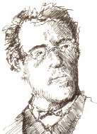

Gustav Mahler’in (1860-1911) konumunun büyük bir besteci olarak yeniden belirlenmesi, ölümünden sonraki kırk yıl içinde olmadı. Ancak II. Dünya Savaşı’nın yaptığı yıkımdan sonra eserleri, genel ve eleştirel gözle bakan halka bir anlam ifade etmeye başladı.

Mahler, Bohemya’da sorunlu bir evde, on dört çocuğun ikincisi olarak dünyaya geldi. Babası, tacizci bir içki üreticisiydi ve genç bir çocukken bile Mahler, evinin çevresindeki tarlalarda ve tepelerde uzun yürüyüşlere çıkarak doğada bir teselli arardı. On beş yaşında, Ludwig van Beethoven ve Richard Wagner’ın eserlerine kafasını taktığı Viyana Konservatuarı’na kabul edildi. Mahler, vejetaryenlik dahil olmak üzere Wagner’ın yaşam kuramlarının bazılarını benimsedi. Üzüntü verici şekilde yaşamının geri kalanında bazıları onu, Wagner ve diğerlerinin ikinci sınıf bir taklitçisi olmakla suçladılar.
Bazı eleştirmenler, Mahler’in bestelerini çeşitli formların – 9. Senfonisi’nde olduğu gibi Johannes Brahms veya Beethoven’ın güçlü senfonik hareketleri, çınlayan koro eserleri ve değerli ama alâkasız gelen folk şarkılarının hepsinin aynı eserde olduğu – tuhaf bir bileşimi olarak gördüler. Mahler’in beste teknikleri, yaşarken bile tartışılmaktaydı. Dinleyiciyi etkilemek için ucuz orkestra hileleri kullanmakla da suçlandı.
Ancak Mahler, ilk gerçek yıldız şeflerden biriydi ve yüksek makamı, orkestra şeflerine onur ve saygı gösterme geleneğinin gelişmesinde önemli rol oynadı. 1907’de New York Metropolitan Opera’sının şefi yapıldı ve sonraki yıl New York Filarmoni Orkestrası’nı yönetmeye başladı. Mahler’in besteleri, ölümünden sonra ihmal edildi ve sadece Bruno Walter, Otto Klemperer ve Leonard Bernstein’in de içinde olduğu diğer ünlü şeflerden, yıllarca sonra gelen destekle tekrar popüler oldular.
EK BİLGİLER:
1. Mahler, muhtemelen yirminci yüzyılın başlarının en ünlü, modaya uygun eşlerinden olan Alma Schindler ile evlendi. Mahler öldükten sonra Alma, mimar Walter Gropius ve sonra yazar Franz Werfel ile evlendi.
2. Mahler, Beethoven’a olduğu gibi, dokuzuncu senfoniden sonra bestecilerin öldüğü konusunda batıl inanca sahipti. Bu lanetten kaçınmak için, sekizinci senfonisinden hemen sonra tenor, soprano ve orkestra için bir şarkı döngüsü olan “Yeryüzünün Şarkısı”nı besteledi ve bir yıl sonra asıl dokuzuncu senfonisini yazdı. Fakat bu, işe yaramadı. Mahler, kısa bir süre sonra bir boğaz enfeksiyonundan öldü.
3. Viyana Opera ve New York Filarmoni Orkestrası’nın da içinde olduğu Mahler tarafından yönetilen her orkestranın, yönetimi altında geçen sadece birkaç yıldan sonra dünya çapında şöhret kazandığı görüldü.